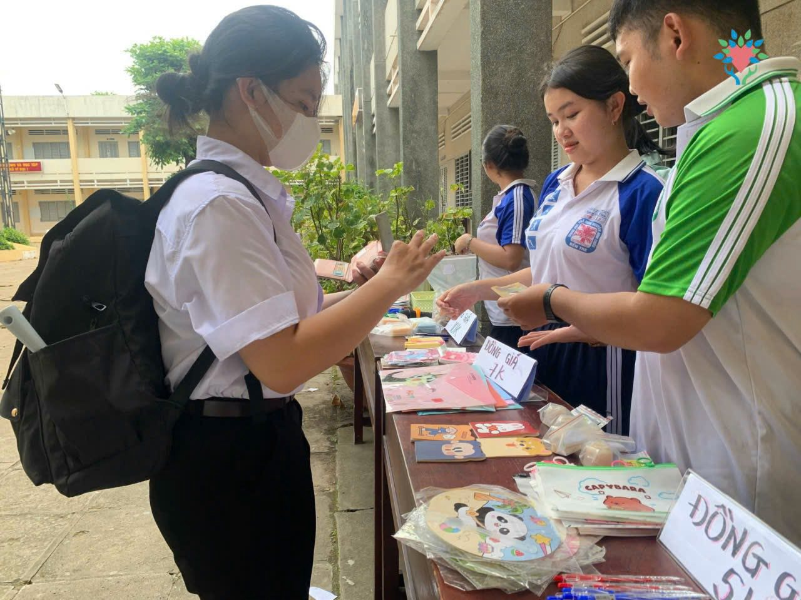
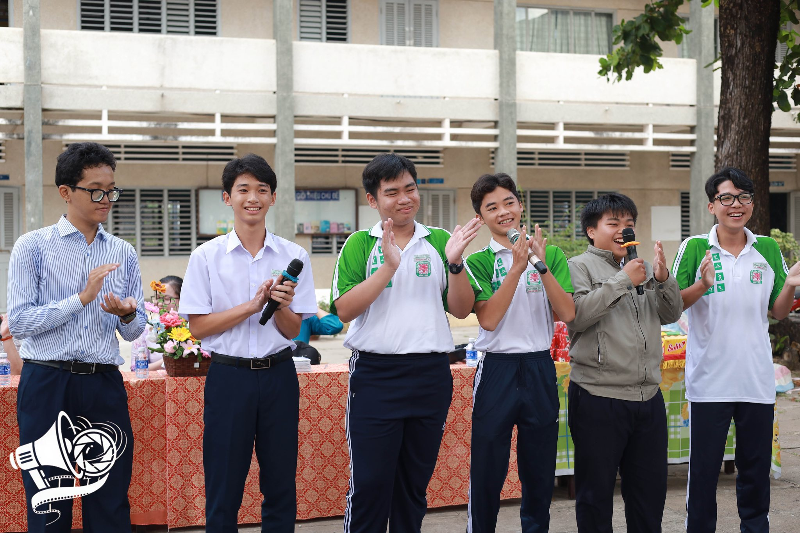

Câu lạc bộ Thể thao

Câu lạc bộ Thể thao Trường THPT Nguyễn Đình Chiểu là nơi quy tụ những học sinh đam mê vận động và mong muốn rèn luyện sức khỏe. Với nhiều bộ môn như bóng đá, bóng chuyền, cầu lông và chạy tiếp sức, câu lạc bộ tạo môi trường năng động để các bạn rèn kỹ năng, củng cố tinh thần đồng đội và phát huy tiềm năng cá nhân. CLB thường xuyên tổ chức các buổi tập luyện, giao hữu và tham gia các giải đấu của trường cũng như cấp tỉnh, mang đến không khí sôi nổi và tinh thần thi đấu đầy nhiệt huyết.
Câu lạc bộ Thiện nguyện
Câu lạc bộ Thiện nguyện là nơi lan tỏa tinh thần sẻ chia của học sinh Trường THPT Nguyễn Đình Chiểu. Hoạt động với mục tiêu hướng đến cộng đồng, CLB tổ chức nhiều chương trình ý nghĩa như quyên góp sách vở, áo quần; thăm hỏi trẻ em có hoàn cảnh khó khăn; và hỗ trợ các hoạt động vì môi trường. Mỗi dự án của CLB đều được xây dựng với trách nhiệm, lòng nhân ái và tinh thần xung kích của tuổi trẻ, giúp các thành viên trưởng thành hơn và thấu hiểu giá trị của yêu thương.
Câu lạc bộ Truyền thông
Câu lạc bộ Truyền thông của trường là nơi dành cho những bạn yêu thích viết lách, nhiếp ảnh, quay dựng video và sáng tạo nội dung. CLB phụ trách đưa tin các sự kiện nổi bật của nhà trường, thiết kế poster, chụp ảnh hoạt động, và vận hành các kênh truyền thông chính thức. Tham gia CLB Truyền thông, học sinh được rèn luyện kỹ năng sáng tạo, làm việc nhóm, quản lý dự án và phát triển tư duy thẩm mỹ – những hành trang giá trị cho tương lai.